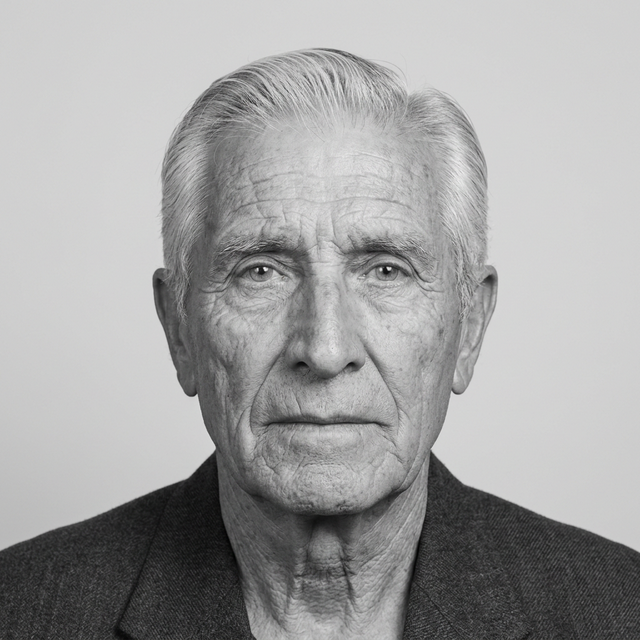

Victoriano Cateriano

Deceased | Great-Grandfather
Victoriano Cateriano was born in the district of Majes, part of the Province of Caylloma in Arequipa, Peru. He spent his life dedicated to agriculture, working the land that defined his region and provided for his family.
At the age of 22 he married Lucila Dongo Salcedo, who was 17 at the time. They were both young when they started their life together, but their union became the foundation of a family whose roots run deep across generations.
Together, Victoriano and Lucila built a life grounded in hard work and devotion. His legacy lives on through every generation that followed.